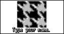
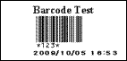

| VBS_NamePlate.html | Summary |
HTML page for creating nameplates. Enter the name and department to create nameplates. Select one of the following two templates: simple or framed. HTML version of the Visual Basic® sample "NamePlt". |
| Methods used | Open(), GetObject(), Text[Property], Width[Property], StartPrint(), PrintOut(), EndPrint(), Export(), Close() | |
| Operable development environment | Internet Explorer | |
| Templates used | NamePlate1.lbx, NamePlate2.lbx | |
| Label image |
| VBS_ChangeImage.html | Summary |
HTML page for creating image labels. Specify the image and the enter a name to create the label. Optional bitmap files can be specified for the graphics. |
| Methods used | Open(), GetObject(), Text[Property], SetData(), Export(),StartPrint(), PrintOut(), EndPrint(), Close() | |
| Operable development environment | Internet Explorer | |
| Templates used | CharLabel.lbx | |
| Label image |  |
| VBS_DB_Bcd.html | Summary |
HTML page for accessing a database and printing labels containing the barcode
data and name for the specified item. First, create a Microsoft® Access MDB file corresponding to the items and barcode data. While holding down the print or preview buttons, access the database via ADO, retrieve the barcode data corresponding to the item, and then print after the component has performed the replacement with the actual barcode. |
| Methods used | Open(), GetObject(), Text[Property], SetData(), Export(), StartPrint(), PrintOut(), EndPrint(), Close() | |
| Operable development environment | Internet Explorer | |
| Templates used | BcdItem.lbx | |
| Label image |  |